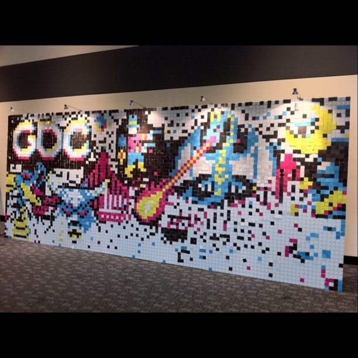

Fri, 04 Mar 2011 00:45:26 · gdc2011
painting with pixels at gdc2011 sf taken with

Painting with Pixels at #GDC2011 SF (Taken with Instagram at Moscone Center)
Fri, 04 Mar 2011 00:45:26 · gdc2011

Painting with Pixels at #GDC2011 SF (Taken with Instagram at Moscone Center)